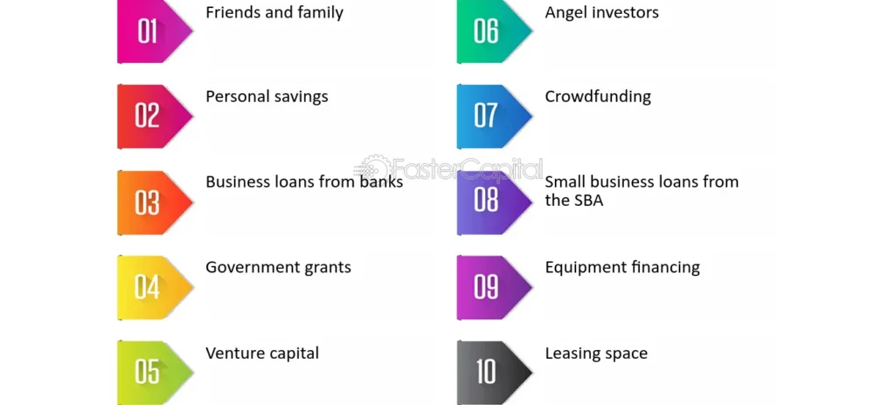
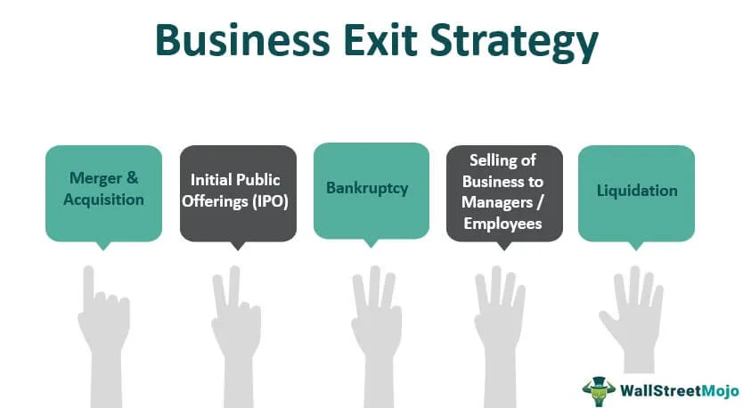
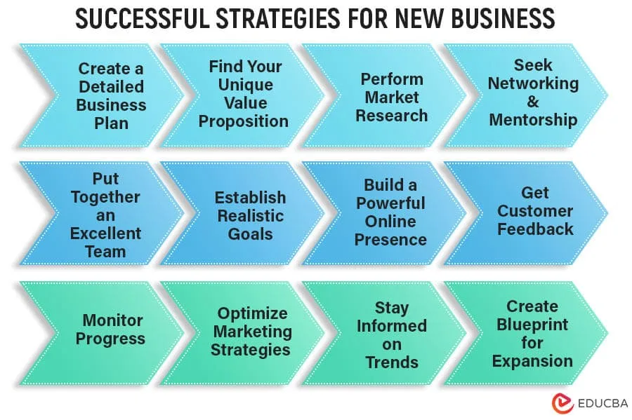

Expanded Nursing Uganda Explanation
Money matters for small business should be reviewed through safe maternal and newborn assessment, early recognition of danger signs, respectful communication and timely referral. Connect the definition to vital signs, bleeding, fetal or newborn wellbeing, patient education and local protocol requirements.
Contents, 17 sections (tap to expand)
01 MONEY MATTERS FOR SMALL BUSINESSES
Money matters involve issues related to finances, particularly personal and business finances .
Money Matters For Small Businesses means that financial management is important for the success and survival of small businesses .
- Money is the most essential resource for starting and operating a business.
It acts as the lifeblood of any business, enabling it to meet its operational expenses and sustain activities.
A small business is an enterprise that operates with limited capital, usually owned by one person or a few individuals.
These owners contribute the capital and often make key decisions. Small businesses usually employ a limited number of staff.
02 Sources of Money for Small Businesses
- Personal Savings: The owner’s initial capital.
- Family and Friends : Financial support from personal networks.
- Trade Credit : Delayed payment arrangements with suppliers.
- Bootstrapping : Using personal savings, credit cards, or selling personal assets to fund the business initially. This minimizes early debt but limits growth potential.
- Small Business Loans : Loans from banks, credit unions, or online lenders. These require a business plan, credit history, and collateral. Interest rates and repayment terms vary widely.
- Venture Capital : Investment from firms specializing in high-growth potential businesses. This involves giving up equity in the company in exchange for funding. Suitable for businesses with significant scalability.
- Angel Investors: Wealthy individuals who invest in startups and small businesses in exchange for equity. They often provide mentoring and guidance alongside funding.
- Crowdfunding : Raising capital from a large number of individuals through online platforms like Kickstarter or Indiegogo. This can build brand awareness but requires a compelling campaign.
- Government Grants & Loans : Various government agencies offer grants and loans specifically for small businesses, often targeting specific industries or demographics. These usually have eligibility requirements.
- Lines of Credit: A pre-approved amount of credit available to borrow as needed. This provides flexibility but typically carries higher interest rates than term loans.
- Invoice Financing : Securing funding based on outstanding invoices. This helps improve cash flow by getting paid faster but may involve fees.
- Merchant Cash Advances : Receiving a lump sum of money in exchange for a percentage of future credit card sales. This can be a quick solution but is often expensive.
03 Importance of Money in Small Businesses
- Medium of Exchange : Facilitates buying and selling of goods and services.
- Maximizes Satisfaction and Profit : Helps in achieving consumer satisfaction and producer profitability.
- Promotes Specialization : Encourages efficiency and higher productivity.
- Facilitates Planning : Aids in production and consumption planning.
- Startup Costs : Covering initial expenses like rent, equipment, inventory, marketing, and legal fees. Insufficient funding at this stage can cripple the business.
- Operating Expenses : Meeting ongoing costs such as salaries, utilities, rent, and supplies. Consistent cash flow is essential for day-to-day operations.
- Growth & Expansion: Investing in new equipment, hiring more staff, expanding into new markets, or developing new products/services. Strategic financial planning fuels growth.
- Debt Management : Managing loans and other debts responsibly. High debt levels can hinder growth and increase the risk of failure.
- Emergency Funds : Having reserves to handle unexpected expenses or downturns in business. This provides a crucial buffer against unforeseen circumstances.
- Profitability & Sustainability: Generating sufficient revenue to cover expenses and generate profits. Profitability is vital for long-term survival and success.
- Investor Confidence : Demonstrating sound financial management attracts investors and secures future funding opportunities. Strong financials build credibility.
- Employee Compensation : Paying fair wages and providing benefits to attract and retain talent. This contributes to a productive and motivated workforce.
- Tax Obligations : Meeting tax obligations on time and accurately. Failure to do so can result in penalties and legal issues.
- Market Opportunities : Having sufficient capital to take advantage of new market opportunities or emerging trends can significantly improve chances of success.
04 Financial Challenges Facing Small Businesses
- Limited Cash Flow : Insufficient funds to sustain operations.
- Excessive Debt: Over-reliance on borrowed funds.
- Poor Marketing Strategies : Ineffective methods to attract customers.
- Mixing Personal and Business Finances : Leads to poor financial management.
- Inadequate Capital: Limited resources to grow the business.
- Lack of Budgeting and Planning: Operating without a clear financial roadmap.
- Cash Flow Problems : Inconsistent or insufficient revenue streams can lead to difficulty meeting short-term obligations like payroll and rent. This is especially acute for businesses with long payment cycles from clients.
- Access to Capital : Securing loans or investments can be challenging due to stringent credit requirements, high interest rates, or a lack of collateral. This limits growth potential and investment in necessary improvements.
- High Startup Costs: The initial investment required to launch a business can be substantial, particularly for businesses needing equipment, inventory, or significant marketing. This can create a significant hurdle for entrepreneurs with limited resources.
- Debt Management : High levels of debt from loans or credit cards can strain finances and make it difficult to manage cash flow effectively. Poor debt management can lead to business failure.
- Pricing Strategies: Balancing competitive pricing with profitability is a constant challenge. Underpricing can impact profitability, while overpricing can reduce sales.
- Economic Downturns : Recessions or economic instability can drastically reduce consumer spending, impacting sales and profitability. Businesses with limited financial reserves are most vulnerable during such periods.
- Inventory Management: Holding excessive inventory ties up capital, while insufficient inventory can lead to lost sales. Effective inventory management is crucial for optimizing cash flow.
- Unexpected Expenses : Unforeseen costs like equipment repairs, legal fees, or emergency situations can disrupt cash flow and strain resources. Having an emergency fund is crucial for mitigating these risks.
- Lack of Financial Literacy: Inadequate understanding of financial management principles, bookkeeping, and budgeting can lead to poor decision-making and financial mismanagement. Business owners need strong financial literacy skills.
- Inflation : Rising prices of goods and services increase operating costs, squeezing profit margins. Businesses need strategies to adapt to inflationary pressures.
05 General Barriers to Entrepreneurship in Uganda
- Shortage of Funds: Limited resources to start and sustain businesses.
- Unsupportive Business Environment : Inadequate governmental regulations and support.
- Employee Recruitment Challeng es : Difficulty in selecting skilled and motivated employees.
- Severe Market Entry Regulations: Restrictive licensing, taxation, and lending policies.
- Limited Opportunities: Few identified business prospects for entrepreneurs.
- Inadequate Training : Insufficient education in entrepreneurship and technical skills.
- Lack of Industry Experience : Entering unfamiliar markets without prior knowledge.
- Other Barriers : Political instability, cultural factors, environmental changes, and fear of risks.
- Access to Finance: Similar to the global small business challenge, securing loans or investments remains a significant barrier. The formal financial sector often lacks reach, leaving many entrepreneurs reliant on informal, high-interest sources.
- Infrastructure Deficiencies : Poor roads, unreliable electricity, and limited internet access increase operational costs and hinder productivity, especially for businesses outside major urban areas.
- Bureaucracy and Regulations : Navigating complex licensing procedures, permits, and taxes can be time-consuming and costly, discouraging potential entrepreneurs. Streamlined regulations are crucial.
- Corruption : Bribery and corruption add extra costs and uncertainty, undermining the business environment and discouraging investment. Transparency and accountability are vital.
- Limited Skills and Education : A lack of entrepreneurial skills, business management knowledge, and technical expertise limits the capacity of many aspiring entrepreneurs. Access to quality education and training programs is crucial.
- Market Access : Reaching customers can be challenging, especially for businesses in remote areas with limited transport networks or access to retail channels. Improving market linkages is essential.
- Land Tenure Issues : Uncertainty surrounding land ownership and access can deter investment and hinder business growth, particularly for businesses relying on land for operations. Clear land titles and secure tenure are critical.
- Political Instability and Risk : Political instability or uncertainty can negatively impact investor confidence and hinder economic activity. A stable and predictable political environment encourages entrepreneurship.
- Competition from Informal Businesses : The prevalence of informal businesses, often operating outside regulatory frameworks, can create unfair competition for formal businesses. Encouraging the formalization of the informal sector would help.
- Lack of Business Support Services: Insufficient access to business incubators, mentorship programs, and other support services limits entrepreneurs’ capacity to build and scale their businesses.
06 How to Improve Entrepreneurship in Uganda
- Tax Reduction : Lower taxes for entrepreneurs to boost business sustainability.
- Training Programs : Government-led initiatives to improve business management skills.
- Employee Development : Entrepreneurs should hire qualified and motivated staff.
- Supportive Policies : Formulation of regulations that favor entrepreneurship.
- Affordable Loans : Advocacy for lower interest rates to encourage borrowing.
- Research and Networking : Entrepreneurs should explore markets, network, and gather insights.
- Infrastructure Development : Investment in roads, markets, and utilities to ease operations.
- Financial Support : Encourage group funding in villages for capital mobilization.
- National Security : Stability to attract internal and external investments.
07 Roles of Entrepreneurship in the Community
- Revenue Generation : Entrepreneurs contribute to government income via taxes and compliance.
- Improved Living Standards : Entrepreneurship reduces scarcity by increasing access to goods and services.
- Innovation and Technology : Entrepreneurs introduce new production methods, ensuring efficiency and competitiveness.
- Women Empowerment : Women-led enterprises promote gender equity and provide resources for community development.
- Export Promotion : High-quality products attract international markets, earning foreign exchange.
- Handicraft Exports : Traditional arts, such as mats and baskets, contribute to cultural preservation and export revenue.
- Infrastructure Growth : Establishing businesses spurs development of roads, bridges, and other facilities.
- Job Creation :
- Direct Employment : Through self-employment opportunities.
- Indirect Employment : Through small and large-scale businesses
08 Business exits and realizing value.
Business Exit Strategy
A business exit strategy is an e ntrepreneur’s strategic plan to sell his or her ownership in a company to investors or another company .
It outlines the plan for how the owner will eventually sell or transfer ownership of their company, allowing them to realize the value they have built.
09 Importances of business exits
An exit strategy gives a business owner a way to reduce or liquidate his stake in a business and, if the business is successful, make a substantial profit. If the business is not successful, an exit strategy (or “exit plan”) enables the entrepreneur to limit losses. An exit strategy may also be used by an investor such as a venture capitalist in order to plan for a cash-out of an investment.
- Financial Gain : A successful exit can generate significant financial returns for the owner, rewarding their hard work and investment.
- Flexibility : Having an exit plan allows the owner to pursue other ventures or simply enjoy the fruits of their labor.
- Risk Management : A well-defined exit strategy can mitigate financial losses if the business encounters challenges.
- Succession Planning: For family-owned businesses, an exit strategy ensures a smooth transition to the next generation.
10 Types of exit strategies
1. Merger and Acquisition (M&A): This involves selling your company to another company, either through a merger or acquisition. This can be a lucrative option.
2. Selling Stake to Partner/Investor : You can sell your ownership stake to an existing partner or investor. This can provide immediate liquidity while retaining some control over the company.
3. Family Succession : This involves transferring ownership to a family member, ensuring the business stays within the family.
4. Acquihires : Acqui-hiring or Acq-hiring refers to the process of acquiring a company primarily to recruit its employees, rather than to gain control of its products or services. This can be a good option for startups with a strong team and innovative technology. Google acquihired Superpod. Google acquired Superpod to improve Google Assistant’s ability to answer questions.
5. Management and Employee Buyouts (MBO ): This involves selling your company to your management team or employees. This can incentivize employees and ensure continuity of leadership.
6. Initial Public Offering (IPO) : This involves selling shares of your company to the public on a stock exchange. This can raise significant capital for growth but comes with increased scrutiny and regulatory requirements.
7. Liquidation : This involves selling off the company’s assets and distributing the proceeds to shareholders. This is usually a last resort option, often used when the business is no longer viable.
8. Bankruptcy : This is a legal process that allows a company to restructure its debts and potentially continue operating. It should be considered only as a last resort due to its significant financial and legal implications.
11 Realising Value / Evaluating an Existing Business
Buying an existing business can be a great opportunity, giving you an established brand, customers, and immediate income. But finding the right business to buy isn’t easy, it’s a time-consuming, costly, and sometimes frustrating process.
Evaluating a business means assessing and analyzing various areas of a business to determine its value, potential risks, and viability . It involves thoroughly examining factors such as financial performance, market position, operations, assets, liabilities, reputation, and legal compliance.
The purpose of evaluating a business is to gain a clear understanding of its strengths, weaknesses, opportunities, and threats before making a decision to buy or invest in it.
12 Ways of evaluating an existing business before purchase include;
Personal Assessment and Criteria: First, consider if the business aligns with your interests, resources, and skills. Evaluate if it’s the right fit for you in terms of cash, credibility, skills, and contacts.
Perform due diligence : This involves researching and confirming the details of the business to ensure you are buying what you expect and to assess its value. Create a team of experts including a banker, industry-specific accountant, attorney, and possibly a small business consultant to perform due diligence. During due diligence, focus on five critical areas:
- Owner’s Reason for Selling : Understand the true motive behind the sale.
- Physical Condition : Assess the state of physical assets like equipment and inventory.
- Market Potential : Find out market demand, customer base, and competition to gauge growth opportunities and risks.
- Legal Aspects : Thoroughly vet legal considerations such as collateral, contract assignments, and ongoing liabilities.
- Financial Health : Analyze financial records with an accountant’s help to assess profitability, stability, and develop future projections.
Ask for the Business Plan : Does the seller have a business plan? This document (or lack thereof) can reveal a lot about the business’s history, future plans, and the owner’s commitment to selling.
Assess the Seller : Your relationship with the seller is important, as you’ll depend on them for information. Pay attention to your interactions during the initial investigation, signs of difficulty now could mean trouble later.
Get a picture of operations : Understand how the business operates by assessing its working capital, manufacturing and operations processes, supply chain, and capital expenditures. Ensure that the business is running smoothly and efficiently.
Evaluate the assets involved : Determine what assets are included in the transaction and their value. This includes intellectual property, brand names, trademarks, patents, and other important assets. Assess how these assets are protected and their significance to the business.
Consider the firm’s reputation: Research the company’s reputation by checking review sites, media outlets, and any past incidents that may have affected its reputation. A strong reputation can positively impact the business’s value.
Verify business licenses and permits : Ensure that the business has all the necessary licenses and permits to operate legally. Check if the required permissions are up-to-date to avoid any potential interruptions or fines after the acquisition.
Confirm the business’ entity status : If the business is a partnership, corporation or limited liability company (LLC) or joint stock company, review entity documents and related records to ensure the business is registered and in good standing. Verify that the owner has the legal rights to sell the business.
13 STRATEGIES FOR A SUCCESSFUL BUSINESS
The strategies are important for building a solid foundation of the business.
Planning : Creating a roadmap for your business, outlining goals, strategies, and action steps. A business plan helps the business owner to think through issues and understand problems. It’s the shorter-term plan, 12 months, as compared to the longer-term strategy plan.
- Developing a Business Plan : This document serves as a roadmap, outlining the business goals, target market, marketing strategies, financial projections, and operational plans. A well-defined business plan helps to attract investors, secure funding, and stay focused on objectives.
- Conducting Market Research: Understanding the target market is essential for developing effective products and services. Market research helps identify customer needs, preferences, and buying behaviors.
- Setting SMART Goals: Specific, Measurable, Achievable, Relevant, and Time-bound goals provide a clear direction for the business and help you track progress.
Funding a Successful Business : Securing the necessary financial resources to launch and operate your business. Adequate and appropriate funding is an ongoing necessity for a healthy business, he advises business owners to develop a relationship with their bank before the need for a loan arises.
- Bootstrapping: This involves starting the business with minimal external funding, relying on your own resources and revenue to grow. Bootstrapping can be a good option for businesses with low startup costs or those seeking to maintain control.
- Seeking Investors: Venture capitalists, angel investors, and crowdfunding platforms can provide the necessary capital to launch and scale the business. Be prepared to give up some ownership and control in exchange for funding.
- Securing Loans : Banks and other financial institutions offer loans to businesses with good credit and a solid business plan. Loans can provide a source of funding, but remember to carefully consider the repayment terms and interest rates.
Branding, Marketing & Image : Establishing a unique identity for your business and effectively communicating its value to your target audience. Branding and marketing is an essential part of business. “Take the time to understand your customer and consider how your customer reacts to what you’re Saying,”
- Developing a Strong Brand Identity: This involves creating a unique name, logo, and visual identity that reflects your brand values and resonates with your target audience.
- Creating a Compelling Marketing Message : Clearly communicate the value proposition of your product or service and how it solves customer problems.
- Utilizing Effective Marketing Channels : Choose the right marketing channels to reach your target audience, such as social media, email marketing, content marketing, or paid advertising.
Sales to Drive Revenue : Implementing strategies to attract customers and convert them into paying clients.
- Building a Strong Sales Team : Hire and train a skilled sales team that can effectively communicate the value of your product or service and close deals.
- Developing a Sales Process : Establish a clear and repeatable sales process that guides your team through each stage of the customer journey, from lead generation to closing the sale.
- Offering Excellent Customer Service : Providing exceptional customer service builds loyalty and encourages repeat business.
Managing People, Process & Benefits : Building a strong team, establishing efficient workflows, and offering competitive benefits to attract and retain talent.
- Building a High-Performing Team: Attract, hire, and retain talented individuals who share your company’s values and are passionate about your mission.
- Establishing Efficient Processes : Streamline your operations by identifying and optimizing workflows, reducing redundancies, and leveraging technology.
- Offering Competitive Benefits: Provide attractive compensation packages, health insurance, retirement plans, and other benefits to attract and retain top talent.
Operations & Accounting : Managing the day-to-day activities of your business and accurately tracking your financial performance. Accounting is important when you’re starting a business.Keep your business account separate from your personal account. A lot of small businesses start with the personal credit of the owner to give the starting point.
- Managing Day-to-Day Operations : Ensure smooth daily operations by establishing clear roles and responsibilities, implementing efficient systems, and monitoring performance metrics.
- Maintaining Accurate Financial Records: Accurate bookkeeping and financial reporting are important for making informed business decisions, tracking progress, and complying with tax regulations.
- Managing Cash Flow : Manage cash flow effectively to ensure you have sufficient funds to cover expenses, invest in growth, and meet financial obligations.
Technology that Matters : Technology is important for its ability to help all businesses scale to provide repeatable and consistent. Leveraging technology to streamline operations, improve efficiency, and improve customer experience.
- Leveraging Technology for Efficiency : Utilize technology to automate tasks, improve communication, and coordinate processes.
- Improve Customer Experience : Implement technologies that improve customer interactions, such as online ordering systems, mobile apps.
- Staying Ahead of the Curve : Embrace new technologies that can give your business a competitive edge and improve overall operations.
14 Nursing Uganda Clinical Lens
Use Successful strategies for small business as a practical nursing topic, not only a memorized definition. Translate theory into safe decisions, accountability, communication and service improvement.
- What to understand first: define successful strategies for small business, identify the normal or expected pattern, then explain what changes when the patient is unwell.
- Why it matters in care: the nurse must recognize risk early, explain findings clearly, document accurately and know when to escalate.
- How to revise it: connect each point to assessment, nursing diagnosis or care problem, intervention, rationale and evaluation.
15 Assessment Guide
- The problem, stakeholders, available resources, policy requirements and ethical issues.
- Risks to patients, staff, confidentiality, quality, costs and continuity.
- Documentation, reporting lines, supervision and evaluation measures.
16 Nursing Priorities, Rationales and Outcomes
- Use evidence, policy and professional standards to guide action.
- Communicate clearly, document decisions and protect confidentiality.
- Evaluate whether the action improves safety, learning or service delivery.
The rationale for these priorities is patient safety: nursing actions should prevent deterioration, reduce discomfort, support recovery and create clear evidence for the next caregiver.
- Expected outcome: The plan is documented, realistic, ethical and improves patient care or learning outcomes.
17 Patient Teaching and Revision Check
- Explain successful strategies for small business in simple language the patient or caregiver can repeat back.
- Teach warning signs, medicine or follow-up instructions, hygiene or lifestyle points where relevant.
- For exams, prepare a short answer using: definition, causes or risk factors, signs, assessment, management, complications and prevention.
- For ward practice, document baseline findings, actions taken, patient response and the plan for review.
Illustrations and Diagrams (5)





Related Video Lectures
Watch nursing lecture videos on YouTube for this topic. Opens in a new tab.
Watch on YouTubeExternal link: YouTube may use its own cookies and terms. Nursing Uganda is not affiliated with YouTube.